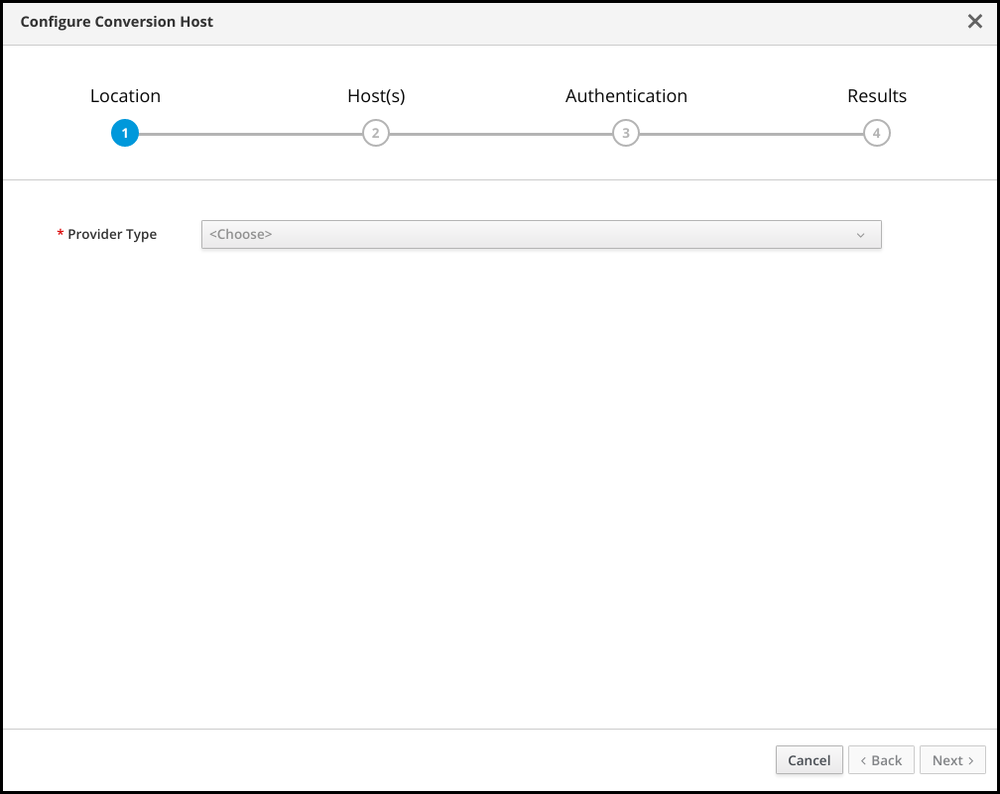
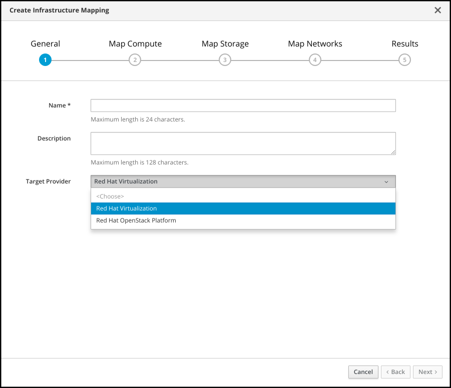
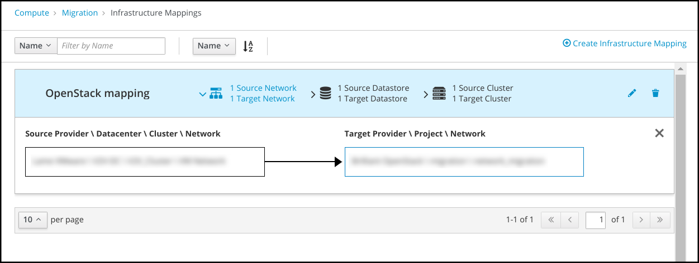
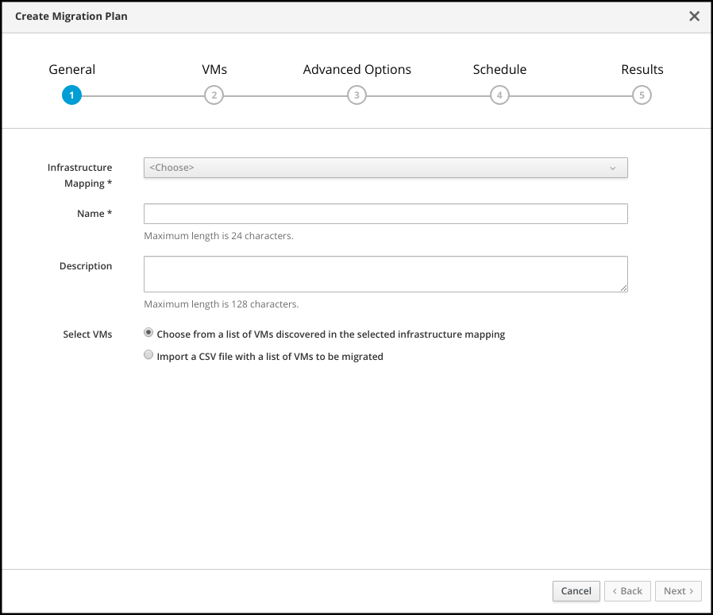

Infrastructure Migration Solution
Migrating from VMware to Red Hat Virtualization or Red Hat OpenStack Platform
Abstract
Preface
Red Hat Infrastructure Migration Solution 1.2 enables you to migrate virtual machines from VMware to Red Hat Virtualization or Red Hat OpenStack Platform, using Red Hat CloudForms.
- Red Hat Virtualization
- Red Hat Virtualization (RHV) provides a virtualization platform built on Red Hat Enterprise Linux (RHEL). You can manage your virtual infrastructure, including hosts, virtual machines, networks, storage, and users, from a centralized graphical user interface or with a REST API. See RHV 4.4 documentation for more information. RHV 4.3 is also supported.
- Red Hat OpenStack Platform
- Red Hat OpenStack Platform (RHOSP) provides a scalable, fault-tolerant, private or public cloud based on Red Hat Enterprise Linux. RHOSP 13 and 16 are supported. See RHOSP 16 documentation for more information.
- Red Hat CloudForms
- Red Hat CloudForms is the environment in which you perform the migration. CloudForms is a unified set of management tools for use across virtualized, private cloud, and public cloud platforms. See CloudForms 5.0 documentation for more information.
Part I. Migrating from VMware to Red Hat Virtualization
This guide describes how to plan your migration, to prepare the VMware and Red Hat Virtualization environments, and to migrate your VMware virtual machines.
Chapter 1. Understanding the migration
1.1. Understanding the migration process
This workflow describes the process of migrating VMware virtual machines to Red Hat Virtualization (RHV).
Figure 1.1. VMware to RHV migration workflow
You create and run a migration plan in the CloudForms user interface.
CloudForms uses the migration plan to locate the VMware virtual machines.
CloudForms captures the VMware ESXi host fingerprint for authentication during the migration process.
CloudForms initiates communication with the RHV conversion hosts. RHV conversion hosts are bare metal hosts with virt-v2v and virt-v2v-wrapper installed.
The virt-v2v-wrapper connects to the VMware datastore through the ESXi host. virt-v2v streams the VMware virtual disks to the Red Hat data domain and converts the disks.
The virt-v2v-wrapper creates a RHV virtual machine and uses the VMware virtual machine’s metadata to preserve its attributes (tags, power state, MAC address, CPU count, memory, disks, and virtual machine name) after migration.
virt-v2v attaches the converted disks to the RHV virtual machine. The RHV virtual machine’s power state is the same as the VMware virtual machine’s power state.
The migration process is complete and the migration plan status is displayed in the CloudForms user interface.
1.2. Migration network requirements
The network communication between the VMware environment, the Red Hat environment, the conversion hosts, and CloudForms must be uninterrupted and reliable.
The firewall rules must enable the following ports for migration.
Table 1.1. Firewall rules for migration
| Port | Protocol | Source | Destination |
|---|---|---|---|
| 22 | TCP | CloudForms | Conversion hosts |
| 443 | TCP | CloudForms | RHV Manager |
| 443 | TCP | CloudForms | VMware ESXi hosts |
| 902 | TCP | CloudForms | VMware ESXi hosts |
| 902 | TCP | Conversion hosts | VMware ESXi hosts |
| 5480 | TCP | Conversion hosts | VMware vCenter |
Chapter 2. Planning the migration
This section provides guidelines for planning your migration.
2.1. Questions to ask before migration
The following questions can help you to estimate the resources and time required for migration.
- What am I migrating?
- Identify the VMware virtual machines that you will be migrating.
- What am I missing?
- Identify resource gaps, such as bandwidth, storage, licenses, or a suitable maintenance window, before you begin the migration.
- What is the maximum number of disks or virtual machines that I can migrate?
There is no maximum number of disks or virtual machines that you can migrate. However, you may not want to migrate all your virtual machines at the same time, in order to minimize the impact on your users.
ImportantIf you exceed the capabilities of your environment, the migration will fail. This situation could affect existing applications running on virtual machines attached to the network and storage.
- What impact will the migration have on my users?
Assess the effects the migration may have on a production environment.
It may be possible to migrate your applications in phases, without downtime at the application layer, if the applications are distributed in a high-availability architecture.
- Check whether users will lose access to critical applications.
2.1.1. How long will the migration take?
There is no formula to estimate how long the actual migration will take. Migration speed is determined by your hardware, network speed, and other factors.
The following example is provided as a guide:
Example 2.1. Migration to Red Hat Virtualization 4.4, with Smart Zero Write
Duration: 55 minutes
Speed: 603 MBps
Environment:
- 20 virtual machines with 100 GB disks (66 GB usage)
- Two conversion hosts (24 CPUs each), with a maximum of ten concurrent migrations each
- SSD storage
- iSCSI interface between VMware hosts and storage
- Fiber Channel interface with multipath access between Red Hat hosts and storage
- 10 GbE NICs
2.1.2. What operating systems can I migrate?
You can migrate any guest operating system that is certified and supported.
2.1.3. How many conversion hosts do I need?
The number of conversion hosts you create depends on the size of your migration. All the virtual machines in a migration plan are migrated at the same time, in parallel. The number of virtual machines that you can migrate simultaneously depends on your infrastructure capabilities. Each migration requires a certain amount of network bandwidth, I/O throughput, and processing power for the conversion process.
Multiple conversion hosts provide load-balancing and better performance, even for small migrations.
Conversion hosts are limited to a maximum of ten concurrent migrations, unless you change the default values.
You should test your environment thoroughly before the migration to determine how many migrations it can support without negative effects, for example, five conversion hosts, each running ten concurrent migrations.
2.1.4. Should I migrate my virtual machines with VDDK or with SSH?
You can migrate your virtual machines with either the VMware Virtual Disk Development Kit (VDDK) or SSH. VDDK is the default because it is much faster than SSH and easier to configure.
VDDK is limited to 20 concurrent migrations per conversion host, because of network limitations, and 10 concurrent migrations per VMware hypervisor, unless you increase the hypervisor’s NFC service memory.
If you cannot use VDDK, SSH is a fallback option.
2.2. Optimizing performance for migration
You can minimize the impact of the migration on your environment and improve performance.
For details on performance-related configurations, see Performance recommendations for migrating from VMware to Red Hat Virtualization or Red Hat OpenStack Platform with IMS.
2.2.1. Optimizing the migration environment
You can configure the VMware and Red Hat environments to optimize your migration.
VMware environment
You can improve performance with the following configurations:
- Extend the VMware virtual machine network to the Red Hat environment.
Ensure that the VMware network provides high throughput.
VMware and Red Hat hosts often have multiple network interfaces. By default, the conversion hosts use the VMware hosts' admin interface to import virtual machines. Configure your routing for the fastest possible connection between the VMware and Red Hat environment. You can use host routes or IP table filtering to control the traffic flow.
- Ensure that the VMware network does not affect production machines, for example, by using a backup network to avoid overload.
- Divide the VMware virtual machines equally between two VMware hosts, if possible.
- Remove unnecessary data from the VMware disks.
Red Hat environment
You can improve performance with the following configurations:
- Update your Red Hat environment to the latest z-stream release and install required patches.
- Use fast, full SSD storage.
- Ensure that the network connection between the bare metal hosts and storage is at least 10 GbE.
- Use Fibre Channel interfaces between the hosts and storage.
- Configure multipath access between the hosts and storage.
2.2.2. Optimizing conversion host performance
You can improve performance with the following conversion host configurations:
Configure midrange or high-end machines, with at least 10 GB of available RAM and 4 CPUs, as conversion hosts.
If you increase the maximum number of concurrent migrations beyond
10(up to20concurrent migrations), add 1 GB RAM for each additional migration.NoteIf you increase the maximum number of concurrent migrations, you must perform test migrations to assess the capabilities of your environment’s infrastructure and to ensure that the actual migration does not fail.
- Enable high performance and disable power-saving in the BIOS settings of the bare metal hosts.
- Ensure that the conversion host is not hosting virtual machines with heavy read/write workloads during the migration.
Ensure that virtual machines on the conversion host are idle during the migration process.
Their presence will not affect migration performance.
Deploy multiple conversion hosts (up to 5) for load-balancing and improved performance.
The virtual machines in a migration plan are automatically distributed among the conversion hosts. This decreases the load on the conversion hosts and allows you to increase the concurrent migrations beyond the limits of a single conversion host.
2.2.3. Scheduling the migration
You can improve performance and minimize the impact on your users by scheduling the migration carefully:
Prepare your users for downtime.
Currently, IMS supports only cold migration. Virtual machines are powered off gracefully as part of the migration process.
- Stagger the migration schedules.
- Move critical applications during maintenance windows.
- Schedule the migration when storage input/output usage is low.
- Create multiple migration plans for finer control.
2.2.4. Grouping virtual machines for migration
You can improve performance and minimize the impact on your users by creating migration groups of virtual machines:
- Create migration groups for your virtual machines, so that you are not migrating all of them at the same time.
Migrate virtual machines as a group, rather than individually.
You can deploy up to 5 conversion hosts, with each host migrating up to 20 virtual machines concurrently. These limits should not be exceeded.
Consider the following questions when creating migration groups:
- How are the virtual machines grouped now?
- Which virtual machines should be migrated together?
- Which workloads or linked applications should be migrated together?
- What applications must remain available?
Consider which parts of the workload to migrate first:
- Databases
- Applications
- Web servers
- Load balancers
Chapter 3. Preparing the migration environment
You can prepare the VMware and Red Hat environments for migration.
3.1. Software compatibility
Ensure that your software versions are compatible.
| Software | Version |
|---|---|
| VMware | 6.0 or later |
| VMware Virtual Disk Development Kit (VDDK) |
|
| Red Hat Virtualization | 4.3 and 4.4 |
| Red Hat CloudForms | 5.0 |
3.2. Preparing the VMware environment
You can prepare the VMware network and virtual machines for migration.
If you are performing more than ten concurrent migrations from a single VMware hypervisor, you can configure the hypervisor.
3.2.1. Preparing the VMware network
You can prepare the VMware network for migration:
- Ensure that IP addresses, VLANs, and other network configuration settings are not changed before or after migration. The migration process preserves the VMware virtual machines' MAC addresses.
See Section 1.2, “Migration network requirements” for firewall rules.
3.2.2. Preparing the VMware virtual machines
You can prepare the VMware virtual machines for migration.
Procedure
- Download and install VMware Tools to preserve the IP addresses.
- Unmount mounted ISO/CDROM disks.
- Ensure that each NIC has no more than one IPv4 and/or one IPv6 address.
-
Ensure that the virtual machine names contain only upper- or lower-case letters, numbers, underscores (
_), hyphens (-), or periods (.). - Ensure that the VMware virtual machine names do not duplicate names of virtual machines in the Red Hat Virtualization environment.
3.2.3. Configuring a VMware hypervisor for more than 10 concurrent migrations
If you are performing more than 10 concurrent migrations from a VMware hypervisor using VDDK transformation, the migration will fail because the hypervisor’s NFC service memory buffer is limited to 10 parallel connections. See VMware Virtual Disk Programming Guide NFC session connection limits and Virt-v2v. VDDK: ESXi NFC service memory limits for details.
You can increase the hypervisor’s NFC service memory to enable additional connections for migrations.
Procedure
- Log in to a VMware hypervisor as root.
Change the value of
maxMemoryto1000000000in/etc/vmware/hostd/config.xml:... <nfcsvc> <path>libnfcsvc.so</path> <enabled>true</enabled> <maxMemory>1000000000</maxMemory> <maxStreamMemory>10485760</maxStreamMemory> </nfcsvc> ...Restart
hostd:# /etc/init.d/hostd restart
You do not need to reboot the VMware hypervisor.
3.3. Installing and configuring the Red Hat environment
You can install and configure Red Hat Virtualization and one or more CloudForms appliances for migration.
3.3.1. Installing and configuring Red Hat Virtualization
You can install and configure Red Hat Virtualization (RHV) 4.3 or 4.4 for migration.
Prerequisites
- Set the BIOS settings of bare metal hosts for optimal performance, rather than power-saving, according to the vendor’s recommendations.
- Disable CPU enhanced halt (C1E) in the BIOS settings, if applicable.
Procedure
Install RHV Manager 4.4 on a bare metal host.
For RHV 4.3, install RHV Manager 4.3 on a bare metal host.
Install Red Hat Virtualization Host 4.4 or Red Hat Enterprise Linux 8 on bare metal hosts.
For RHV 4.3, install Red Hat Virtualization Host 4.3 or Red Hat Enterprise Linux 7 on bare metal hosts.NoteSome of these hosts will be deployed as conversion hosts. The number of conversion hosts depends on your migration size and infrastructure capabilities.
Create and attach data and ISO storage domains to the data center.
NoteYou can only migrate to shared storage, such as NFS, iSCSI, or FCP. Local storage is not supported.
Although the ISO storage domain has been deprecated, it is required for migration.
Upload the VirtIO and RHV Guest Tools image files to the ISO storage domain.
The VirtIO file name must include the version number (
virtio-win-version.iso). The guest tools are required for migrating Windows virtual machines.Optionally, you can create a MAC address pool that includes the MAC addresses of the VMware virtual machines to be migrated.
ImportantIf the Red Hat Virtualization MAC address pool range overlaps the VMware MAC address range, you must ensure that the MAC addresses of the migrating virtual machines do not duplicate those of existing virtual machines. Otherwise, the migration will fail.
If you do not create a MAC address pool, the migrated virtual machines will not have MAC addresses in the same range as virtual machines created in Red Hat Virtualization.
3.3.2. Configuring an existing Red Hat Virtualization environment
If you are migrating to an existing Red Hat Virtualization (RHV) environment, check the following:
- Upgrade RHV to the latest z-stream release.
Check each conversion host for valid subscriptions and repositories:
# subscription-manager list --consumed # yum repolist
Check each conversion host for existing SSH private keys in
/var/lib/vdsm/.ssh/id_rsa.Delete the keys manually before configuring the host. Conversion host configuration does not overwrite existing keys.
If the MAC address pool range overlaps the VMware MAC address range, ensure that the MAC addresses of the migrating virtual machines do not duplicate those of existing virtual machines.
If you do not create a MAC address pool, the migrated virtual machines will not have MAC addresses in the same range as virtual machines created in Red Hat Virtualization.
3.3.3. Installing and configuring Red Hat CloudForms
You can install and configure Red Hat CloudForms for migration.
If you change or remove a provider in CloudForms, your infrastructure mappings or migration plans will have errors. You must delete and re-create the infrastructure mappings or migration plans.
Procedure
- Install CloudForms 5.0 on the Manager machine.
- Add VMware vCenter to CloudForms as an infrastructure provider.
- Authenticate the VMware vCenter hosts.
- Add Red Hat Virtualization to CloudForms as an infrastructure provider.
- Click Compute → Infrastructure → Providers to verify that CloudForms can access the providers and hosts.
- Synchronize the server and client clocks, if possible, to ensure that migration time counters are aligned.
3.3.4. Installing and configuring Red Hat CloudForms in a distributed environment
You can install Red Hat CloudForms in a distributed environment, with appliances on your user interface, database, and worker machines.
If you create an infrastructure mapping or migration plan and then remove or change a provider in CloudForms, the mapping or plan must be deleted and re-created.
Procedure
- Install Red Hat CloudForms on Red Hat Virtualization (RHV) or VMware.
- Configure the worker appliances, if necessary.
Enable the required server roles in the CloudForms user interface:
- Database: No server roles required
User interface:
- Database Operations
- User Interface
- Web Services
Worker:
- Automation Engine
- Capacity & Utilization Coordinator
- Capacity & Utilization Data Collector
- Capacity & Utilization Data Processor
- Database Operations
- Event Monitor
- Provider Inventory
- Provider Operations
- Reporting
- Scheduler
- SmartState Analysis
- Web Services
- Add VMware to CloudForms as an infrastructure provider.
- Authenticate the VMware vCenter hosts.
- Add RHV to CloudForms as an infrastructure provider.
- Click Compute → Infrastructure → Providers to verify that CloudForms can access the providers and hosts.
- Configure the Capacity and Utilization Collection Settings of the CloudForms worker appliances to collect data from the VMware and Red Hat providers.
3.4. Configuring the Red Hat Virtualization conversion hosts
You can configure the Red Hat Virtualization conversion hosts in the CloudForms user interface to use the VMware Virtual Disk Development Kit (VDDK). VDDK converts the VMware disks.
See Section 3.1, “Software compatibility” for the required VDDK version.
3.4.1. Downloading the VMware Virtual Disk Development Kit
You can download the VMware Virtual Disk Development Kit (VDDK).
Procedure
- In a browser, navigate to the VMware {code} site and click SDKS.
- Click Virtual Disk Development Kit (VDDK).
- Select the VDDK release specified for your VMware version.
- Click Download and log in with your VMware account credentials.
- Save the VDDK archive file and record its path.
3.4.2. Configuring the Red Hat Virtualization conversion hosts for VDDK transformation
You can configure the Red Hat Virtualization (RHV) conversion hosts for VDDK transformation in the CloudForms user interface.
Prerequisites
If the RHV provider has been active for a while, verify that each host has valid subscriptions and repositories by logging in using SSH and running the following commands:
# subscription-manager list --consumed # yum repolist
-
If a RHV host has an existing SSH private key in
/var/lib/vdsm/.ssh/id_rsa, delete the key manually before configuring the host. Conversion host configuration does not overwrite existing keys.
Procedure
- In CloudForms, click Compute → Migration → Migration Settings.
In the Conversion Hosts tab, click Configure Conversion Host. The Configure Conversion Host wizard is displayed.

- In the Location screen, select a Provider Type.
- Select a Provider.
- Select a Cluster and click Next.
- In the Host(s) screen, select one or more hosts from the dropdown list and click Next.
In the Authentication screen, click Browse to browse to the Manager’s SSH private key or paste it in the Conversion host SSH private key field.
The Manager deploys a private SSH key on the conversion hosts in order to send commands and run playbooks. The default key file is
/etc/pki/ovirt-engine/keys/engine_id_rsaon the Manager machine.- Select VDDK as the Transformation method.
- Enter the path of the VDDK package in the VDDK library path field.
- Click Configure.
In the Results screen, wait for the conversion host configuration to finish and click Close.
The configured conversion hosts and status information, including error messages, appear in the Configured Conversion Hosts list.
If an error occurs, you can download the conversion host configuration log by clicking the More Actions icon ( ) and selecting Download Log.
You can click Retry if the conversion host configuration failed for reasons unconnected with your environment.
3.4.3. Verifying the conversion hosts
You can verify your conversion hosts by using the CloudForms API.
Procedure
- Verify the conversion hosts:
$ curl -s -k -u <user>:<password> 'https://<CloudForms_FQDN>/api/conversion_hosts' 1- 1
- Specify your CloudForms user name, password, and FQDN.
The conversion host IDs appear at the end of the
resourcesURL, after/api/conversion_hosts/:{ "name":"conversion_hosts", ... "resources": [{"href":"https://<CloudForms_FQDN>/api/conversion_hosts/10000000000001"},{"href":"https://<CloudForms_FQDN>/api/conversion_hosts/10000000000002"},{"href":"https://<CloudForms_FQDN>/api/conversion_hosts/10000000000003"}], ... } }
Chapter 4. Migrating the virtual machines
You can create an infrastructure mapping in the CloudForms user interface. You then create and run a migration plan.
Optionally, you can change the maximum number of concurrent migrations for conversion hosts or providers to control the migration process.
4.1. Migration prerequisites
Check your migration for the following conditions, which have prerequisites:
- If you are migrating previously migrated virtual machines, you must add previously migrated machines to the migration plan with a CSV file. A CSV file is also recommended for large migrations.
- If you are using Ansible playbooks for premigration/postmigration tasks, you must create an Ansible repository and add credentials and playbooks to CloudForms.
- If you are migrating virtual machines running RHEL or other Linux operating system, you must create a RHEL premigration playbook to preserve IP addresses. You will select this playbook when you create a migration plan.
4.1.1. Creating a CSV file to add virtual machines to the migration plan
If you are migrating virtual machines that were migrated in the past, you must add the virtual machines to the migration plan with a CSV file, because the migration plan cannot discover them automatically.
A CSV file is optional, but recommended, for large migrations because it is faster than manually selecting individual virtual machines.
Table 4.1. CSV file fields
| Field | Comments |
|---|---|
|
| Virtual machine name. Required |
|
|
Optional. Only required if virtual machines have identical |
|
|
Optional. Only required if virtual machines have identical |
CSV file example
Name,Host,Provider vm01,host1,vSphere3 vm02,host1,vSphere3 vm03,host1,vSphere3
4.1.2. Adding Ansible playbooks to CloudForms for premigration and postmigration tasks
You can add Ansible playbooks to CloudForms to perform automated premigration and postmigration tasks on specific virtual machines, for example:
- Removing web servers from a load-balancing pool before migration and returning them to the pool after migration
- Preserving the IP addresses of VMware virtual machines running RHEL or other Linux operating system
Procedure
- Log in to the CloudForms user interface.
-
Enable the
Embedded Ansibleserver role. - Add an Ansible playbook repository.
- Add the credentials of each virtual machine that you are migrating.
- Add your playbook as an Ansible service catalog item.
You will select the playbooks and the virtual machines on which they run in the Advanced Options screen when you create the migration plan.
4.1.3. Creating a RHEL premigration playbook for RHEL/Linux virtual machines
If you are migrating a virtual machine running RHEL or other Linux operating system, you must create and run a RHEL premigration playbook to call the Ansible ims.rhel_premigration role.
The ims.rhel_premigration role ensures that the virtual machine IP addresses are accessible after migration.
Prerequisites
-
The
rhel-<version>-server-rpmsrepository must be enabled for the VMware virtual machines. If you have disabled it, you can re-enable it in the RHEL premigration playbook.
Procedure
-
Install the
ims.rhel_premigrationrole with Ansible Galaxy. Create a
RHEL premigrationplaybook according to the following example:--- - hosts: <hosts> 1 vars: rhsm_repositories: - "rhel-<version>-server-rpms" 2 roles: - role: ims.rhel_pre_migration
You will add this playbook when you create your migration plan.
4.2. Creating an infrastructure mapping
The infrastructure mapping maps the resources of your VMware and Red Hat environments.
If you add or remove providers or provider objects from an infrastructure mapping, the mapping will have missing resource errors. You must delete the infrastructure mapping and create a new one.
Procedure
- Click Compute → Migration → Infrastructure Mappings.
Click Create Infrastructure Mapping. The Create Infrastructure Mapping wizard is displayed.

- In the General screen, enter the infrastructure mapping name and (optional) description.
- Select the Target Provider and click Next.
In the Map Compute screen, select a Source Provider \ Datacenter \ Cluster and a Target Provider \ Datacenter \ Cluster.
If the target cluster does not contain a conversion host, a warning icon ( ) appears. You can create and save an infrastructure mapping, but you must configure the conversion hosts before running a migration plan.
- Click Add Mapping. You can map additional clusters.
- Click Next.
- In the Map Storage screen, select a Source Provider \ Datacenter \ Datastore and Target Datastores.
- Click Add Mapping. You can map additional datastores.
- Click Next.
- In the Map Networks screen, select a source cluster.
- Select one or more networks from Source Provider \ Datacenter \ Network and Target Project \ Network.
- Click Add Mapping. You can map the networks of additional source clusters.
- Click Create.
- Click Close. The infrastructure mapping is saved in Compute → Migration → Infrastructure Mappings.
You can click an infrastructure mapping element to view its details:
Infrastructure Mappings list

4.3. Creating and running a migration plan
Before attempting a large migration, you should perform several test migrations with different maximum numbers of concurrent migrations for your conversion hosts or providers. This will enable you to assess the capabilities of your environment’s infrastructure.
A CSV file is optional, but recommended, for large migrations because it is faster than manually selecting each virtual machine.
Procedure
- Click Compute → Migration → Migration Plans.
Click Create Migration Plan. The Create Migration Plan wizard is displayed.

- In the General screen, select an infrastructure mapping from the drop-down list.
- Enter the migration plan Name and (optional) Description.
Select a virtual machine discovery method:
Choose from a list of VMs discovered in the selected infrastructure mapping
If the virtual machines cannot be discovered, check that the source datastores and networks in the infrastructure mapping are correct.
Import a CSV file with a list of VMs to be migrated.
A CSV file is required for previously migrated source virtual machines and recommended for large migrations.
- Click Next.
In the VMs screen, select the virtual machines for migration:
If you selected Choose from a list of VMs discovered in the selected infrastructure mapping, select the virtual machines for migration.
You can search for virtual machines by VM Name, Data Center, Cluster, and Folder.
If you selected Import a CSV file with a list of VMs to be migrated:
- Click Import.
Browse to the CSV file and click Open.
If the virtual machines cannot be added to the migration plan, check the CSV file format and fields for errors.
NoteIf the Create Migration Plan wizard freezes, refresh the web page, check the CSV file for errors (for example, virtual machines with duplicate
Namefields and no other fields to distinguish them), and create a new migration plan.
- Click Next.
In the Advanced Options screen, select the playbook service options:
- Select a premigration and/or postmigration playbook service from the dropdown lists.
- Select the virtual machines on which to run the playbook services.
- Click Next.
In the Schedule screen, select a schedule option and click Create:
Save migration plan to run later
The migration plan is saved in Migration Plans Not Started and will not run unless you schedule it or click Migrate to run the scheduled migration plan immediately.
Start migration immediately
The migration plan may take some time to complete. Progress bars indicate the amount of transferred data, the number of migrated virtual machines, and the elapsed time. You can cancel a migration plan in progress.
- To view the progress of a migration plan, Click Migration Plans in Progress.
Click a migration plan name to view its details, including the status of the migrating virtual machines.
NoteThe Migration Plans time counter displays the total time for running the migration plan. The Migration Plan Details time counter displays the time for migrating the virtual machines.
If the server and client clocks are not synchronized, a discrepancy between the migration time counters will appear.
In the Results screen, click Close.
When the migration plan has finished, click Migration Plans Complete to view the status of the migration plan. The completed migration plan shows the status of the migrated virtual machines.
In the migration plans list, you can click the More Actions icon ( ) to archive, edit, or delete a migration plan.
If a migration fails because of external circumstances (for example, power outage), you can retry the migration plan.
4.3.1. Scheduling a saved migration plan
To schedule a saved migration plan to run in the future:
- Click Migration Plans Not Started.
- Click the Schedule button of a migration plan.
In the Schedule Migration Plan window, select a date and time and click Schedule.
The plan’s status is Migration Scheduled with the date and time.
4.3.2. Canceling a migration plan in progress
To cancel a migration plan in progress:
- Click Migration Plans in Progress.
- Select a migration plan and click Cancel Migration.
Click Cancel Migrations to confirm the cancellation.
The canceled migration appears in Migration Plans Complete with a red
xindicating that the plan did not complete successfully.
4.3.3. Retrying a failed migration plan
To retry a migration plan that failed because of external circumstances (for example, power outage):
Delete all objects created by the failed migration plan:
- Delete newly created virtual machines to avoid name conflicts with migrating VMware virtual machines.
- Delete converted disks to free up space.
- Click Compute → Migration → Migration Plans.
- Click Migration Plans Complete.
- Click the Retry button beside the failed migration plan.
4.4. Changing the maximum number of concurrent migrations
You can change the maximum number of concurrent migrations for conversion hosts or providers to control the impact of the migration process on your infrastructure.
The provider setting has priority over the conversion host setting. For example, if the maximum number of concurrent migrations is 20 for a provider and 3 for five conversion hosts, the maximum number of concurrent migrations is 20, not 15 (5 conversion hosts x 3 concurrent migrations per host).
An increase in the maximum number of concurrent migrations affects all migration plans immediately. Virtual machines that are queued to migrate will migrate in greater numbers.
A decrease maximum number of concurrent migrations affects only future migration plans. Migration plans that are in progress will use the limit that was set when the plan was created.
For VDDK transformation, the number of concurrent migrations must not exceed 20. Otherwise, network overload will cause the migration to fail.
Changing the maximum number of concurrent migrations for all conversion hosts
- Log in to the CloudForms user interface.
- Click Compute → Migration → Migration Settings.
In the Migration Throttling tab, select a value for Maximum concurrent migrations per conversion host or Maximum concurrent migrations per provider and click Apply.
The value of Maximum concurrent migrations per conversion host is constrained so that it cannot be greater than Maximum concurrent migrations per provider.
Changing the maximum number of concurrent migrations for a specific conversion host
- Log in to the conversion host using SSH.
Obtain the
conversion_host_id:# curl -sk -u <username>:<password> https://<CloudForms_FQDN>/api/conversion_hosts/ 1- 1
- Specify the CloudForms FQDN.
Enter the following command:
# curl -sk -u <username>:<password> https://<CloudForms_FQDN>/api/conversion_hosts/<conversion_host_id> -X POST -d '{"action": "edit", "resource": {"max_concurrent_tasks": _15_}}' 1 2 3 4
Chapter 5. Troubleshooting
You can review the migration logs, check common issues and mistakes, and known issues to troubleshoot a migration error.
5.1. Migration logs
You can check the conversion host logs, playbook logs, and the CloudForms migration log to identify the cause of a migration error.
If you need to open a Red Hat Support call, you must submit both the migration (virt-v2v) log and virt-v2v-wrapper log for analysis.
5.1.1. Downloading the conversion host and playbook logs
You can download the conversion host and playbooks logs in CloudForms.
When disk migration starts, two logs are created in the conversion host:
-
virt-v2v: Debug output fromvirt-v2vitself. This log tracks the core of the virtual machine migration process, includinglibguestfstraces and disk migration details. -
virt-v2v-wrapper: Log of the daemonizing wrapper forvirt-v2v. This log traces the orchestration of the virtual machine conversion on the conversion host, including disk migration percentages andvirt-v2verror reporting.
Procedure
- Log in to the CloudForms user interface.
- Click Compute → Migration → Migration Plans.
- Click a completed migration plan to view its details.
Click Download Log of a virtual machine and select a log:
- Premigration log This option only appears if a premigration playbook is used.
-
Migration log The Migration log is the
virt-v2vlog. - Virt-v2v-wrapper log
- Postmigration log This option only appears if a postmigration playbook is used.
5.1.2. Accessing the CloudForms migration log
This log traces the orchestration of the virtual machine migration in CloudForms.
Procedure
- Log in to the CloudForms machine using SSH.
-
The migration log is
/var/www/miq/vmdb/log/automation.log.
5.2. Common issues and mistakes
5.2.1. Infrastructure mapping errors
Networks missing,Datastores missing, andClusters missingerror messagesIf you create an infrastructure mapping and then change a provider or refresh the conversion hosts, the provider’s object IDs change. Delete the infrastructure mapping and create a new one.
5.2.2. Migration plan errors
Virtual machines are being migrated for the first time and are not discovered by the migration plan.
Check that the source datastores and networks appear in the infrastructure mapping.
Previously migrated virtual machines cannot be discovered by the migration plan.
Use a CSV file to add the virtual machines to the migration plan.
Virtual machines cannot be added to the migration plan with a CSV file.
Check the CSV file format and fields. Create a new migration plan with the updated CSV file.
The Create Migration Plan wizard hangs while importing a CSV file.
The CVS file is invalid, for example, virtual machines with a duplicate
Namefield and noHost/Providerfield to distinguish them, or with a duplicateNamefield and duplicateHost/Providerfields. Correct the CSV file, refresh the web page, and create a new migration plan.Unable to migrate VMs because no conversion host was configured at the time of the attempted migration. See the product documentation for information on configuring conversion hosts.You can create and save a migration plan whose infrastructure mapping does not contain conversion hosts, but you cannot run the migration plan without conversion hosts. Cancel the migration plan, create the conversion hosts, and run the migration plan again.
5.2.3. IP address errors
IP address of a migrated RHEL (or other Linux-based operating system) virtual machine is not accessible
You must create a
RHEL premigrationplaybook and add it to the migration plan.Migrated virtual machine does not have an IP address
You must install VMware Tools on the VMware virtual machine before migration.
5.2.4. Environment configuration errors
VMware
A VMware virtual machine cannot be migrated if it has any of the following conditions:
- Mounted ISO/CDROM disk
- Invalid name, containing spaces or special characters
- If you are performing more than ten concurrent migrations from a single VMware hypervisor, you must increase the hypervisor’s NFC service memory.
Red Hat Virtualization (RHV)
Name conflict
VMware virtual machine has the same name as a RHV virtual machine.
MAC address conflict
VMware virtual machine has the same MAC address as a RHV virtual machine in a MAC address pool.
-
Check that the RHV conversion host does not have an existing private SSH key in
/var/lib/vdsm/.ssh/id_rsa. Conversion host configuration does not overwrite old SSH keys. They must be deleted manually. SSH transformation only:
-
If you are using SSSD with single sign-on, you must reinstall
ipa-clientwithout OpenSSH. - Check that you enabled SSH access on the VMware hypervisors and correctly configured your conversion hosts for SSH transformation.
-
If you are using SSSD with single sign-on, you must reinstall
5.3. Known Issues
- VMware virtual machines with RHEL 8 operating systems cannot be migrated to RHV 4.4. (BZ#1667478).
Networks missingorDatastore missingerror messages might appear in the CloudForms user interface when you create an infrastructure mapping in a very large environment. These error messages can occur when the number of records for a particular resource in the CloudForms database exceeds the default number (1000) of API results displayed per page. If the mapped resource does not appear in the displayed records, it will be missing from the infrastructure mapping.You can resolve this issue by increasing the maximum number of API results per page so that all of the records are displayed.
Procedure
- Log in to the CloudForms user interface.
- In the header bar, click (Configuration).
- Click the Settings accordion and then click Zones.
- Click the zone in which the EVM server is located and select your EVM server.
-
In the Advanced tab, change the value of
max_results_per_pageto10000. - Click Save.
Appendix A. Configuring the Red Hat Virtualization environment for SSH transformation
You can configure your Red Hat Virtualization (RHV) environment for SSH transformation if you cannot use VDDK.
The default transformation method, VDDK, is much faster than SSH.
This configuration involves adding the following steps to Chapter 3, Preparing the migration environment:
Table A.1. Additional configuration for SSH transformation
| Section | Additional configuration for SSH transformation |
|---|---|
| Go to: You can collect the SSH keys from the hypervisors at this time, if your security policies allow. The private key of the SSH key pair that is generated in this step will be used in Section A.3, “Configuring the Red Hat Virtualization conversion hosts for SSH transformation”. | |
| After Section 3.3.1, “Installing and configuring Red Hat Virtualization” | If the conversion hosts are using SSSD with single sign-on, go to:
* Section A.2, “Reinstalling the |
| Instead of Section 3.4.2, “Configuring the Red Hat Virtualization conversion hosts for VDDK transformation” | Go to: |
A.1. Configuring the VMware hypervisors for SSH transformation
For SSH transformation, you must enable SSH access and copy a public SSH key to each VMware hypervisor. The corresponding private key will be used to configure the conversion hosts.
A single SSH key pair is recommended because this key pair is used only for virtual machine conversion and it simplifies conversion host management.
If you wish to use a dedicated SSH key pair for each conversion host, you can copy the public key of each conversion host to all the VMware hypervisors.
Procedure
Enable SSH access on each VMware hypervisor, according to the VMware documentation:
- In a browser, navigate to VMware vSphere Documentation.
-
Enter
Enable ESXi Shell and SSH Access with the Direct Console User Interfacein the Search field and select your VMware version. Click the
HTMLicon to view the procedure.You can collect the SSH public keys of the VMware hypervisors at this stage, to copy to the conversion hosts.
Generate an SSH key pair without a passphrase:
# ssh-keygen -N ''
Copy the public SSH key to
/etc/ssh/keys-root/authorized_keyson each VMware hypervisor.You will use the private SSH key to configure the conversion hosts.
A.2. Reinstalling the ipa-client in the Red Hat Virtualization Manager
If you are using SSH transformation and configuring your Red Hat Virtualization (RHV) conversion hosts for SSSD with single sign-on, you must reinstall the ipa-client in the RHV Manager without the OpenSSH client.
Otherwise, SSH fails for the vdsm user. See BZ#1544379: ipa-client-install changes system-wide SSH configuration for more information.
This issue cannot be resolved by modifying the configuration file because the file is restored during upgrades.
Procedure
- Log in to the RHV Manager machine using SSH.
Uninstall
ipa-client:# ipa-client-install --uninstall
Reinstall
ipa-clientwithout OpenSSH:# ipa-client-install --no-ssh
A.3. Configuring the Red Hat Virtualization conversion hosts for SSH transformation
You can configure the Red Hat Virtualization (RHV) conversion hosts for SSH transformation in the CloudForms user interface.
Prerequisites
If the RHV provider has been active for a while, verify that each host has valid subscriptions and repositories by logging in using SSH and running the following commands:
# subscription-manager list --consumed # yum repolist
-
If a RHV host has an existing SSH private key in
/var/lib/vdsm/.ssh/id_rsa, delete the key manually before configuring the host. Conversion host configuration does not overwrite existing keys.
Procedure
- In CloudForms, click Compute → Migration → Migration Settings.
In the Conversion Hosts tab, click Configure Conversion Host. The Configure Conversion Host wizard is displayed.
- In the Location screen, select a Provider Type.
- Select a Provider.
- Select a Cluster and click Next.
- In the Host(s) screen, select one or more hosts from the dropdown list and click Next.
In the Authentication screen, click Browse to browse to the Manager’s SSH private key or paste it in the Conversion host SSH private key field.
The Manager deploys a private SSH key on the conversion hosts in order to send commands and run playbooks. The default key file is
/etc/pki/ovirt-engine/keys/engine_id_rsaon the Manager machine.- Select SSH as the Transformation method.
- Click Browse to browse to the SSH private key you created for enabling SSH access on the VMware hypervisors or paste it in the VMware hypervisors SSH private key field.
- Click Configure.
In the Results screen, wait for the conversion host configuration to finish and click Close.
The configured conversion hosts and status information, including error messages, appear in the Configured Conversion Hosts list.
If an error occurs, you can download the conversion host configuration log by clicking the More Actions icon ( ) and selecting Download Log.
You can click Retry if the conversion host configuration failed for reasons unconnected with your environment.
A.4. Copying the VMware SSH keys to the conversion hosts
Copy the SSH public keys of the VMware hypervisors to the conversion hosts.
You can collect the VMware keys either when you configure the VMware hypervisors for SSH transformation or by using ssh-keyscan.
A.4.1. Copying keys collected during VMware hypervisor configuration
-
Copy the VMware keys to
/var/lib/vdsm/.ssh/known_hostson each conversion host. Verify the SSH connection by connecting to each VMware hypervisor as
vdsm:$ sudo -u vdsm ssh root@<Vmware_host_name> 1- 1
- Specify the host name of your VMware hypervisor.
If the SSH connection fails, check that the VMware hypervisor has SSH access enabled and that you copied the correct keys. Otherwise, all migrations from that hypervisor using SSH transformation will fail.
A.4.2. Copying keys collected with ssh-keyscan
You must run ssh-keyscan for each VMware hypervisor. Otherwise your conversion hosts will not have all the VMware hypervisor keys and the migration will fail.
Perform the following procedure on each conversion host:
Run
ssh-keyscanfor each VMware hypervisor and copy its public key toknown_hosts, as in the following example:$ ssh-keyscan <Vmware_host_1_ip> | sudo tee -a /var/lib/vdsm/.ssh/known_hosts 1 $ ssh-keyscan <Vmware_host_2_ip> | sudo tee -a /var/lib/vdsm/.ssh/known_hosts $ ssh-keyscan <Vmware_host_3_ip> | sudo tee -a /var/lib/vdsm/.ssh/known_hosts- 1
- Specify the IP address, not the host name, of each VMware hypervisor.
Change the ownership of the
known_hostsfile tovdsmuser andkvmgroup:$ chown 36:36 /var/lib/vdsm/.ssh/known_hosts
Verify the SSH connection by connecting to each VMware hypervisor as
vdsm:$ sudo -u vdsm ssh root@<Vmware_host_name> 1- 1
- Specify the host name of the VMware hypervisor.
If the SSH connection fails, check that the VMware hypervisor has SSH access enabled and that you copied the correct keys. Otherwise, all migrations from that hypervisor using SSH transformation will fail.
A.5. Configuring secure remote login to the VMware hypervisors
You can configure secure remote login to the VMware hypervisors by using ssh-agent and ssh-add.
Secure remote login must be verified for each VMware hypervisor. If secure remote login fails, all migrations from that hypervisor will fail.
Procedure
On the Manager machine, create an
ssh-agentsession for thevdsmuser:$ sudo -u vdsm ssh-agent SSH_AUTH_SOCK=<ssh_auth_sock>; export SSH_AUTH_SOCK; SSH_AGENT_PID=139150; export SSH_AGENT_PID; echo Agent pid 139150;
-
Copy the
<ssh_auth_sock>value from the output. Run
ssh-addto authorize thevdsmuser’s private key for thessh-agentsession:$ sudo -u vdsm SSH_AUTH_SOCK=<ssh_auth_sock> ssh-add 1- 1
- Specify the
<ssh_auth_sock>value.
Connect to a VMware hypervisor to verify the secure remote login:
$ sudo -u vdsm \ SSH_AUTH_SOCK=<ssh_auth_sock> ssh root@<Vmware_host_name> 1 2
Part II. Migrating from VMware to Red Hat OpenStack Platform
This guide describes how to plan your migration, to prepare the VMware and Red Hat OpenStack Platform environments, and to migrate your VMware virtual machines.
Chapter 6. Understanding the migration
6.1. Understanding the migration process
This workflow describes the process of migrating VMware virtual machines to Red Hat OpenStack Platform (RHOSP).
Figure 6.1. VMware to RHOSP migration workflow
You create and run a migration plan in the CloudForms user interface.
CloudForms uses the migration plan to locate the VMware virtual machines.
CloudForms captures the VMware ESXi host fingerprint for authentication during the migration process.
CloudForms initiates communication with the RHOSP conversion hosts. RHOSP conversion hosts are RHOSP instances with virt-v2v and virt-v2v-wrapper installed.
The virt-v2v-wrapper connects to the VMware datastore through the ESXi host. virt-v2v streams the VMware virtual disks to the Red Hat data domain and converts the disks.
After the VMware virtual disks are converted, virt-v2v detaches the volumes from the RHOSP conversion host, migrates the volumes to the RHOSP project, and creates the network ports defined in the infrastructure mapping.
virt-v2v-wrapper creates a RHOSP instance with the flavor and security group defined in the migration plan. virt-v2v attaches the newly created network ports and the disks mapped in the block storage to the instance. The instance is powered on.
The migration process is complete and the migration plan status is displayed in the CloudForms user interface.
6.2. Migration network requirements
The network communication between the VMware environment, the Red Hat environment, the conversion hosts, and CloudForms must be uninterrupted and reliable.
The firewall rules must enable the following ports for migration.
Table 6.1. Firewall rules for migration
| Port | Protocol | Source | Destination |
|---|---|---|---|
| 22 | TCP | CloudForms | Conversion hosts |
| 443 | TCP | CloudForms | VMware ESXi hosts |
| 902 | TCP | CloudForms | VMware ESXi hosts |
| 902 | TCP | Conversion hosts | VMware ESXi hosts |
| 5480 | TCP | Conversion hosts | VMware vCenter |
All outbound traffic is enabled by default. If you have changed this setting, check that ports 902 and 5480 are enabled in the security groups.
Chapter 7. Planning the migration
This section provides guidelines for planning your migration.
7.1. Questions to ask before migration
The following questions can help you to estimate the resources and time required for migration.
- What am I migrating?
- Identify the VMware virtual machines that you will be migrating.
- What am I missing?
- Identify resource gaps, such as bandwidth, storage, licenses, or a suitable maintenance window, before you begin the migration.
- What is the maximum number of disks or virtual machines that I can migrate?
There is no maximum number of disks or virtual machines that you can migrate. However, you may not want to migrate all your virtual machines at the same time, in order to minimize the impact on your users.
ImportantIf you exceed the capabilities of your environment, the migration will fail. This situation could affect existing applications running on virtual machines attached to the network and storage.
- What impact will the migration have on my users?
Assess the effects the migration may have on a production environment.
It may be possible to migrate your applications in phases, without downtime at the application layer, if the applications are distributed in a high-availability architecture.
- Check whether users will lose access to critical applications.
7.1.1. How long will the migration take?
There is no formula to estimate how long the actual migration will take. Migration speed is determined by your hardware, network speed, and other factors.
The following example is provided as a guide:
Example 7.1. Migration to Red Hat OpenStack Platform 14
Duration: 133 minutes
Environment:
- 20 virtual machines, with 1000 GB total data
- Two conversion hosts, with a maximum of ten concurrent migrations each
- Bare metal host with 40 cores and 500 GB RAM
- SSD storage
- iSCSI interface between VMware hosts and storage
- Fiber Channel interface with multipath access between Red Hat hosts and storage
- 10 GbE NICs
7.1.2. What operating systems can I migrate?
You can migrate any guest operating system that is certified and supported.
7.1.3. How many conversion hosts do I need?
The number of conversion hosts you create depends on the size of your migration. All the virtual machines in a migration plan are migrated at the same time, in parallel. The number of virtual machines that you can migrate simultaneously depends on your infrastructure capabilities. Each migration requires a certain amount of network bandwidth, I/O throughput, and processing power for the conversion process.
Multiple conversion hosts provide load-balancing and better performance, even for small migrations.
Conversion hosts are limited to a maximum of ten concurrent migrations, unless you change the default values.
You should test your environment thoroughly before the migration to determine how many migrations it can support without negative effects, for example, five conversion hosts, each running ten concurrent migrations.
7.1.4. Should I migrate my virtual machines with VDDK or with SSH?
You can migrate your virtual machines with either the VMware Virtual Disk Development Kit (VDDK) or SSH. VDDK is the default because it is much faster than SSH and easier to configure.
VDDK is limited to 20 concurrent migrations per conversion host, because of network limitations, and 10 concurrent migrations per VMware hypervisor, unless you increase the hypervisor’s NFC service memory.
If you cannot use VDDK, SSH is a fallback option.
7.2. Optimizing performance for migration
You can minimize the impact of the migration on your environment and improve performance.
For details on performance-related configurations, see Performance recommendations for migrating from VMware to Red Hat Virtualization or Red Hat OpenStack Platform with IMS.
7.2.1. Optimizing the migration environment
You can configure the VMware and Red Hat environments to optimize your migration.
VMware environment
You can improve performance with the following configurations:
- Extend the VMware virtual machine network to the Red Hat environment.
Ensure that the VMware network provides high throughput.
VMware and Red Hat hosts often have multiple network interfaces. By default, the conversion hosts use the VMware hosts' admin interface to import virtual machines. Configure your routing for the fastest possible connection between the VMware and Red Hat environment. You can use host routes or IP table filtering to control the traffic flow.
- Ensure that the VMware network does not affect production machines, for example, by using a backup network to avoid overload.
- Divide the VMware virtual machines equally between two VMware hosts, if possible.
- Remove unnecessary data from the VMware disks.
Red Hat environment
You can improve performance with the following configurations:
- Update your Red Hat environment to the latest z-stream release and install required patches.
- Use fast, full SSD storage.
- Ensure that the network connection between the bare metal hosts and storage is at least 10 GbE.
- Use Fibre Channel interfaces between the hosts and storage.
- Configure multipath access between the hosts and storage.
7.2.2. Optimizing conversion host performance
You can improve performance with the following conversion host configurations:
Deploy the conversion hosts on dedicated, midrange or high-end bare metal hosts, with at least 10 GB of available RAM and 4 CPUs.
If you increase the maximum number of concurrent migrations beyond
10(up to20concurrent migrations), add 1 GB RAM for each additional migration.NoteIf you increase the maximum number of concurrent migrations, you must perform test migrations to assess the capabilities of your environment’s infrastructure and to ensure that the actual migration does not fail.
Deploy the conversion host instances with at least 10 GB of available RAM and 4 CPUs.
If you increase the maximum number of concurrent migrations beyond
10(up to20concurrent migrations), add 1 GB RAM for each additional migration.NoteIf you increase the maximum number of concurrent migrations, you must perform test migrations to assess the capabilities of your environment’s infrastructure and to ensure that the actual migration does not fail.
- Deploy the conversion hosts on dedicated bare metal hosts.
- Ensure that the virtual machines on those hosts have low storage input/output usage.
- Enable nested virtualization for the compute nodes on which the conversion hosts are deployed.
Deploy multiple conversion hosts (up to 5) for load-balancing and improved performance.
The virtual machines in a migration plan are automatically distributed among the conversion hosts. This decreases the load on the conversion hosts and allows you to increase the concurrent migrations beyond the limits of a single conversion host.
7.2.3. Scheduling the migration
You can improve performance and minimize the impact on your users by scheduling the migration carefully:
Prepare your users for downtime.
Currently, IMS supports only cold migration. Virtual machines are powered off gracefully as part of the migration process.
- Stagger the migration schedules.
- Move critical applications during maintenance windows.
- Schedule the migration when storage input/output usage is low.
- Create multiple migration plans for finer control.
7.2.4. Grouping virtual machines for migration
You can improve performance and minimize the impact on your users by creating migration groups of virtual machines:
- Create migration groups for your virtual machines, so that you are not migrating all of them at the same time.
Migrate virtual machines as a group, rather than individually.
You can deploy up to 5 conversion hosts, with each host migrating up to 20 virtual machines concurrently. These limits should not be exceeded.
Consider the following questions when creating migration groups:
- How are the virtual machines grouped now?
- Which virtual machines should be migrated together?
- Which workloads or linked applications should be migrated together?
- What applications must remain available?
Consider which parts of the workload to migrate first:
- Databases
- Applications
- Web servers
- Load balancers
Chapter 8. Preparing the migration environment
You can prepare the VMware and Red Hat environments for migration.
8.1. Software compatibility
Ensure that your software versions are compatible.
| Software | Version |
|---|---|
| VMware | 6.0 or later |
| VMware Virtual Disk Development Kit (VDDK) |
|
| Red Hat CloudForms | 5.0 |
| Red Hat OpenStack Platform | 13 or 16 |
| RHOSP V2V Image for Red Hat OpenStack Director | 14.0.4 |
8.2. Preparing the VMware environment
You can prepare the VMware network and virtual machines for migration.
If you are performing more than ten concurrent migrations from a single VMware hypervisor, you must configure the hypervisor.
8.2.1. Preparing the VMware network
You can prepare the VMware network for migration:
- Ensure that IP addresses, VLANs, and other network configuration settings are not changed before or after migration. The migration process preserves the VMware virtual machines' MAC addresses.
See Section 6.2, “Migration network requirements” for firewall rules.
8.2.2. Preparing the VMware virtual machines
You can prepare the VMware virtual machines for migration.
Procedure
- Download and install VMware Tools to preserve the IP addresses.
- Unmount mounted ISO/CDROM disks.
- Ensure that each NIC has no more than one IPv4 and/or one IPv6 address.
-
Ensure that the virtual machine names contain only upper- or lower-case letters, numbers, underscores (
_), hyphens (-), or periods (.). - Ensure that the VMware virtual machine names do not duplicate names of virtual machines in the Red Hat OpenStack Platform tenant.
8.2.3. Configuring a VMware hypervisor for more than 10 concurrent migrations
If you are performing more than 10 concurrent migrations from a VMware hypervisor using VDDK transformation, the migration will fail because the hypervisor’s NFC service memory buffer is limited to 10 parallel connections. See VMware Virtual Disk Programming Guide NFC session connection limits and Virt-v2v. VDDK: ESXi NFC service memory limits for details.
You can increase the hypervisor’s NFC service memory to enable additional connections for migrations.
Procedure
- Log in to a VMware hypervisor as root.
Change the value of
maxMemoryto1000000000in/etc/vmware/hostd/config.xml:... <nfcsvc> <path>libnfcsvc.so</path> <enabled>true</enabled> <maxMemory>1000000000</maxMemory> <maxStreamMemory>10485760</maxStreamMemory> </nfcsvc> ...Restart
hostd:# /etc/init.d/hostd restart
You do not need to reboot the VMware hypervisor.
8.3. Installing and configuring the Red Hat environment
You can install and configure Red Hat OpenStack Platform and one or more CloudForms appliances for migration.
8.3.1. Installing and configuring Red Hat OpenStack Platform
You can install and configure your Red Hat OpenStack Platform 13 and 16.1.
Prerequisites
- Set the BIOS settings of the bare metal hosts for optimal performance, rather than power-saving, according to the vendor’s recommendations.
- Disable CPU enhanced halt (C1E) in the BIOS settings, if applicable.
- Check the firewall and security group rules to ensure that the ports required for migration are open.
Procedure
You can install and configure Red Hat OpenStack Platform (RHOSP) for migration.
Prerequisites
- Set the BIOS settings of bare metal hosts for optimal performance, rather than power-saving, according to the vendor’s recommendations.
- Disable CPU enhanced halt (C1E) in the BIOS settings, if applicable.
- Check the firewall and security group rules to ensure that the ports required for migration are open.
Procedure
- Install Red Hat OpenStack Platform.
- Create provider networks for the target instances to preserve the IP addresses of the source virtual machines.
- Create a project for the conversion hosts and any target projects you require for the target instances.
-
Ensure that the
adminuser hasmemberandadminroles in the conversion host and target projects. - Create a volume and set at least one volume type for the target block storage. Otherwise, CloudForms will not detect the storage when you create the infrastructure mapping.
Ensure that the storage backends have sufficient space for the migrated virtual machines.
ImportantIf you are using Red Hat Ceph Storage, you will require three times the space of the source virtual machines for the migrated virtual machines. A Ceph storage cluster, by default, creates two copies of an object in a replicated storage pool, for a total of three copies.
The migrated disks use all of the space because it is preallocated. For example, a source virtual machine with a 100 GB disk requires 300 GB of storage, regardless of how much data the disk actually contains. To save storage space, you can use the
fstrimcommand on the migrated virtual machines as a postmigration task or playbook.- Create flavors for the source virtual machines. If you do not create custom flavors, CloudForms will try to map each source virtual machine to an existing flavor.
8.3.2. Configuring an existing Red Hat OpenStack Platform environment
If you are migrating to an existing Red Hat OpenStack Platform (RHOSP) environment, check the following:
When you add the RHOSP provider to CloudForms, you must wait for CloudForms to update its event history before attempting to use the provider.
You can check the cloud provider timeline to verify that all events have been processed.
8.3.3. Installing and configuring Red Hat CloudForms
You can install and configure Red Hat CloudForms for migration.
If you change or remove a provider in CloudForms, your infrastructure mappings or migration plans will have errors. You must delete and re-create the infrastructure mappings or migration plans.
Procedure
- Install CloudForms 5.0 on Red Hat OpenStack Platform (RHOSP).
- Add VMware vCenter to CloudForms as an infrastructure provider.
- Authenticate the VMware vCenter hosts.
Add Red Hat OpenStack Platform to CloudForms as a cloud provider.
Do not complete the fields in the RSA key pair tab. You will add the SSH private key when you configure the conversion hosts.
- If the RHOSP provider has been active for a while, you must wait for CloudForms to update its event history before attempting to use the provider. You can check the cloud provider timeline to verify that all events have been processed.
- Click Compute → Infrastructure → Providers to verify that CloudForms can access the providers and hosts.
- Synchronize the server and client clocks, if possible, to ensure that migration time counters are aligned.
8.3.4. Installing and configuring Red Hat CloudForms in a distributed environment
You can install Red Hat CloudForms in a distributed environment, with appliances on your user interface, database, and worker machines.
If you create an infrastructure mapping or migration plan and then remove or change a provider in CloudForms, the mapping or plan must be deleted and re-created.
Procedure
- Install Red Hat CloudForms on Red Hat OpenStack Platform (RHOSP) or VMware.
- Configure the worker appliances, if necessary.
Enable the required server roles in the CloudForms user interface:
- Database: No server roles required
User interface:
- Database Operations
- User Interface
- Web Services
Worker:
- Automation Engine
- Capacity & Utilization Coordinator
- Capacity & Utilization Data Collector
- Capacity & Utilization Data Processor
- Database Operations
- Event Monitor
- Provider Inventory
- Provider Operations
- Reporting
- Scheduler
- SmartState Analysis
- Web Services
- Add VMware to CloudForms as an infrastructure provider.
- Authenticate the VMware vCenter hosts.
Add RHOSP to CloudForms as a cloud provider.
Do not complete the fields in the RSA key pair tab. You will add the SSH private key when you configure the conversion hosts.
- If the RHOSP provider has been active for a while, you must wait for CloudForms to update its event history before attempting to use the provider. Check the cloud provider timeline to verify that all events have been processed.
- Click Compute → Infrastructure → Providers to verify that CloudForms can access the providers and hosts.
- Configure the Capacity and Utilization Collection Settings of the CloudForms worker appliances to collect data from the VMware and Red Hat providers.
8.4. Creating and configuring the Red Hat OpenStack Platform conversion hosts
You can create the Red Hat OpenStack Platform conversion hosts with the conversion appliance.
8.4.1. Creating a Red Hat OpenStack Platform conversion host
You can create a Red Hat OpenStack Platform conversion host with the conversion appliance. The number of conversion hosts you deploy depends on your migration size and infrastructure capabilities.
For optimal performance, deploy the conversion hosts on compute nodes with nested virtualization enabled. Nested virtualization is a technology preview.
Procedure
- Log in to Red Hat OpenStack Platform.
- Upload the V2V image to the OpenStack Image Service.
Launch the conversion host instance, specifying the following options:
- Instance Boot Source: V2V image
- 4 vCPUs
-
10 GB RAM, if you use the default maximum number of concurrent migrations per conversion host, which is
10. If you increase the number of concurrent migrations, you must add 1 GB RAM for each additional concurrent migration. If you reduce the number, you can reduce the RAM but the conversion host cannot have less than 8 GB RAM. -
/tmp(10 GB, or 1 GB for each concurrent migration) -
/var/tmp(10 GB, or 1 GB for each concurrent migration) -
/var/logs(5 GB)
Resize the conversion host instance to accommodate its file system.
The conversion host instance is created from an image, but the disk space defined in the image is not sufficient. You can either extend the partition (and subsequently, extend the physical volume in the volume group) to the required size or you can create a new partition and add it as a physical volume to the volume group.
NoteYou must resize
lv_rootto use all available disk space because the image will not use it by default.
8.4.2. Downloading the VMware Virtual Disk Development Kit
You can download the VMware Virtual Disk Development Kit (VDDK).
Procedure
- In a browser, navigate to the VMware {code} site and click SDKS.
- Click Virtual Disk Development Kit (VDDK).
- Select the VDDK release specified for your VMware version.
- Click Download and log in with your VMware account credentials.
- Save the VDDK archive file and record its path.
See Section 8.1, “Software compatibility” for the required VDDK version.
8.4.3. Configuring the Red Hat OpenStack Platform conversion hosts for VDDK transformation
You can configure the Red Hat OpenStack Platform (RHOSP) conversion hosts for VDDK transformation in the CloudForms user interface.
Procedure
- In CloudForms, click Compute → Migration → Migration Settings.
In the Conversion Hosts tab, click Configure Conversion Host. The Configure Conversion Host wizard is displayed.
- In the Location screen, select a Provider Type.
- Select a Provider.
- Select a Project and click Next.
- In the Host(s) screen, select one or more hosts from the dropdown list and click Next.
In the Authentication screen, click Browse to browse to the SSH private key of the SSH key pair that you used when you created the conversion host or paste the key in the Conversion host SSH private key field.
CloudForms uses this private SSH key to connect to the conversion host.
- Select VDDK as the Transformation method.
- Enter the path of the VDDK package in the VDDK library path field.
- Click Configure.
In the Results screen, wait for the conversion host configuration to finish and click Close.
The configured conversion hosts and status information, including error messages, appear in the Configured Conversion Hosts list.
If an error occurs, you can download the conversion host configuration log by clicking the More Actions icon ( ) and selecting Download Log.
You can click Retry if the conversion host configuration failed for reasons unconnected with your environment.
8.4.4. Verifying the conversion hosts
You can verify your conversion hosts by using the CloudForms API.
Procedure
- Verify the conversion hosts:
$ curl -s -k -u <user>:<password> 'https://<CloudForms_FQDN>/api/conversion_hosts' 1- 1
- Specify your CloudForms user name, password, and FQDN.
The conversion host IDs appear at the end of the
resourcesURL, after/api/conversion_hosts/:{ "name":"conversion_hosts", ... "resources": [{"href":"https://<CloudForms_FQDN>/api/conversion_hosts/10000000000001"},{"href":"https://<CloudForms_FQDN>/api/conversion_hosts/10000000000002"},{"href":"https://<CloudForms_FQDN>/api/conversion_hosts/10000000000003"}], ... } }
Chapter 9. Migrating the virtual machines
You can create an infrastructure mapping in the CloudForms user interface. You then create and run a migration plan.
Optionally, you can change the maximum number of concurrent migrations for conversion hosts or providers to control the migration process.
9.1. Migration prerequisites
Check your migration for the following conditions, which have prerequisites:
- If you are migrating previously migrated virtual machines, you must add previously migrated machines to the migration plan with a CSV file. A CSV file is also recommended for large migrations.
- If you are using Ansible playbooks for premigration/postmigration tasks, you must create an Ansible repository and add credentials and playbooks to CloudForms.
- If you are migrating virtual machines running RHEL or other Linux operating system, you must create a RHEL premigration playbook to preserve their IP addresses and select this playbook when you create a migration plan.
9.1.1. Creating a CSV file to add virtual machines to the migration plan
If you are migrating virtual machines that were migrated in the past, you must add the virtual machines to the migration plan with a CSV file, because the migration plan cannot discover them automatically.
A CSV file is optional, but recommended, for large migrations because it is faster than manually selecting the security group and flavor of each virtual machine.
Table 9.1. CSV file fields
| Field | Comments |
|---|---|
|
| Virtual machine name. Required |
|
|
Optional. Only required if virtual machines have identical |
|
|
Optional. Only required if virtual machines have identical |
|
|
Optional. The default is |
|
| Optional If you do not create flavors for the migration or if you leave this field blank, CloudForms tries to map the source virtual machines to existing flavors. |
CSV file example
Name,Host,Provider,Security Group,Flavor vm01,host1,vSphere3,webservers,x1.medium vm02,host1,vSphere3,webservers,x1.medium vm03,host1,vSphere3,webservers,x1.medium
9.1.2. Adding Ansible playbooks to CloudForms for premigration and postmigration tasks
You can add Ansible playbooks to CloudForms to perform automated premigration and postmigration tasks on specific virtual machines, for example:
- Removing web servers from a load-balancing pool before migration and returning them to the pool after migration
- Preserving the IP addresses of VMware virtual machines running RHEL or other Linux operating system
-
Running
fstrimafter migration to reduce the space required by virtual machines migrating to Red Hat OpenStack Platform with Ceph storage
Procedure
- Log in to the CloudForms user interface.
-
Enable the
Embedded Ansibleserver role. - Add an Ansible playbook repository.
- Add the credentials of each virtual machine that you are migrating.
- Add your playbook as an Ansible service catalog item.
You will select the playbooks and the virtual machines on which they run in the Advanced Options screen when you create the migration plan.
9.1.3. Creating a RHEL premigration playbook for RHEL/Linux virtual machines
If you are migrating a virtual machine running RHEL or other Linux operating system, you must create and run a RHEL premigration playbook to call the Ansible ims.rhel_premigration role.
The ims.rhel_premigration role ensures that the virtual machine IP addresses are accessible after migration.
Prerequisites
-
The
rhel-<version>-server-rpmsrepository must be enabled for the VMware virtual machines. If you have disabled it, you can re-enable it in the RHEL premigration playbook.
Procedure
-
Install the
ims.rhel_premigrationrole with Ansible Galaxy. Create a
RHEL premigrationplaybook according to the following example:--- - hosts: <hosts> 1 vars: rhsm_repositories: - "rhel-<version>-server-rpms" 2 roles: - role: ims.rhel_pre_migration
You will add this playbook when you create your migration plan.
9.2. Creating an infrastructure mapping
The infrastructure mapping maps the resources of your VMware and Red Hat environments.
If you add or remove providers or provider objects from an infrastructure mapping, the mapping will have missing resource errors. You must delete the infrastructure mapping and create a new one.
Procedure
- Click Compute → Migration → Infrastructure Mappings.
Click Create Infrastructure Mapping. The Create Infrastructure Mapping wizard is displayed.
- In the General screen, enter the infrastructure mapping name and (optional) description.
- Select the Target Provider and click Next.
In the Map Compute screen, select a Source Provider \ Datacenter \ Cluster source cluster and a Target Provider \ Project.
If the target project does not contain a conversion host, a warning icon ( ) appears. You can create and save an infrastructure mapping, but you must configure the conversion hosts before running a migration plan.
- Click Add Mapping. You can map additional projects.
- Click Next.
In the Map Storage screen, select a Source Provider \ Datacenter \ Datastore and Target Provider \ Volume Type.
If the volume type is missing, check that the volume type has been set. Block storage requires at least one volume type. See Create a Volume and Changing a Volume’s Type (Volume Re-typing) in the Red Hat OpenStack Platform Storage Guide.
- Click Add Mapping. You can map additional datastores.
- Click Next.
- In the Map Networks screen, select a source cluster.
Select one or more networks from Source Provider \ Datacenter \ Network and Target Project \ Network.
IMS supports both provider and tenant networks.
- Click Add Mapping. You can map the networks of additional source clusters.
- Click Create.
- Click Close. The infrastructure mapping is saved in Compute → Migration → Infrastructure Mappings.
You can click an infrastructure mapping element to view its details:
Infrastructure Mappings list
9.3. Creating and running a migration plan
Before attempting a large migration, you should perform several test migrations with different maximum numbers of concurrent migrations for your conversion hosts or providers. This will enable you to assess the capabilities of your environment’s infrastructure.
A CSV file is optional, but recommended, for large migrations because it is faster than manually selecting the security group and flavor of each virtual machine.
Procedure
- Click Compute → Migration → Migration Plans.
Click Create Migration Plan. The Create Migration Plan wizard is displayed.
- In the General screen, select an infrastructure mapping from the drop-down list.
- Enter the migration plan Name and (optional) Description.
Select a virtual machine discovery method:
Choose from a list of VMs discovered in the selected infrastructure mapping
If the virtual machines cannot be discovered, check that the source datastores and networks in the infrastructure mapping are correct.
Import a CSV file with a list of VMs to be migrated.
A CSV file is required for previously migrated source virtual machines and recommended for large migrations.
- Click Next.
In the VMs screen, select the virtual machines for migration:
If you selected Choose from a list of VMs discovered in the selected infrastructure mapping, select the virtual machines for migration.
You can search for virtual machines by VM Name, Data Center, Cluster, and Folder.
If you selected Import a CSV file with a list of VMs to be migrated:
- Click Import.
Browse to the CSV file and click Open.
If the virtual machines cannot be added to the migration plan, check the CSV file format and fields for errors.
NoteIf the Create Migration Plan wizard freezes, refresh the web page, check the CSV file for errors (for example, virtual machines with duplicate
Namefields and no other fields to distinguish them), and create a new migration plan.
- Click Next.
In the Instance Properties screen, click the pencil icon to edit the network or flavor of each selected virtual machine.
Flavors that are too small for the virtual machine are marked with an asterisk (
*). If you have not created flavors for the migration, CloudForms tries to map the source virtual machines to existing flavors.- Click Next.
In the Advanced Options screen, select the playbook service options:
- Select a premigration and/or postmigration playbook service from the dropdown lists.
- Select the virtual machines on which to run the playbook services.
- Click Next.
In the Schedule screen, select a schedule option and click Create:
Save migration plan to run later
The migration plan is saved in Migration Plans Not Started and will not run unless you schedule it or click Migrate to run the scheduled migration plan immediately.
Start migration immediately
The migration plan may take some time to complete. Progress bars indicate the amount of transferred data, the number of migrated virtual machines, and the elapsed time. You can cancel a migration plan in progress.
- To view the progress of a migration plan, Click Migration Plans in Progress.
Click a migration plan name to view its details, including the status of the migrating virtual machines.
NoteThe Migration Plans time counter displays the total time for running the migration plan. The Migration Plan Details time counter displays the time for migrating the virtual machines.
If the server and client clocks are not synchronized, a discrepancy between the migration time counters will appear.
In the Results screen, click Close.
When the migration plan has finished, click Migration Plans Complete to view the status of the migration plan. The completed migration plan shows the status of the migrated virtual machines.
In the migration plans list, you can click the More Actions icon ( ) to archive, edit, or delete a migration plan.
If a migration fails because of external circumstances (for example, power outage), you can retry the migration plan.
9.3.1. Scheduling a saved migration plan
To schedule a saved migration plan to run in the future:
- Click Migration Plans Not Started.
- Click the Schedule button of a migration plan.
In the Schedule Migration Plan window, select a date and time and click Schedule.
The plan’s status is Migration Scheduled with the date and time.
9.3.2. Canceling a migration plan in progress
To cancel a migration plan in progress:
- Click Migration Plans in Progress.
- Select a migration plan and click Cancel Migration.
Click Cancel Migrations to confirm the cancellation.
The canceled migration appears in Migration Plans Complete with a red
xindicating that the plan did not complete successfully.
9.3.3. Retrying a failed migration plan
To retry a migration plan that failed because of external circumstances (for example, power outage):
Delete all objects created by the failed migration plan:
- Delete newly created instances to avoid name conflicts with migrating VMware virtual machines.
- Delete network ports of failed instances.
- Click Compute → Migration → Migration Plans.
- Click Migration Plans Complete.
- Click the Retry button beside the failed migration plan.
9.4. Changing the maximum number of concurrent migrations
You can change the maximum number of concurrent migrations for conversion hosts or providers to control the impact of the migration process on your infrastructure.
The provider setting has priority over the conversion host setting. For example, if the maximum number of concurrent migrations is 20 for a provider and 3 for five conversion hosts, the maximum number of concurrent migrations is 20, not 15 (5 conversion hosts x 3 concurrent migrations per host).
An increase in the maximum number of concurrent migrations affects all migration plans immediately. Virtual machines that are queued to migrate will migrate in greater numbers.
A decrease maximum number of concurrent migrations affects only future migration plans. Migration plans that are in progress will use the limit that was set when the plan was created.
Red Hat OpenStack Platform conversion hosts require an additional 1 GB RAM for each additional concurrent migration above 10.
For VDDK transformation, the number of concurrent migrations must not exceed 20. Otherwise, network overload will cause the migration to fail.
Changing the maximum number of concurrent migrations for all conversion hosts
- Log in to the CloudForms user interface.
- Click Compute → Migration → Migration Settings.
In the Migration Throttling tab, select a value for Maximum concurrent migrations per conversion host or Maximum concurrent migrations per provider and click Apply.
The value of Maximum concurrent migrations per conversion host is constrained so that it cannot be greater than Maximum concurrent migrations per provider.
Changing the maximum number of concurrent migrations for a specific conversion host
- Log in to the conversion host using SSH.
Obtain the
conversion_host_id:# curl -sk -u <username>:<password> https://<CloudForms_FQDN>/api/conversion_hosts/ 1- 1
- Specify the CloudForms FQDN.
Enter the following command:
# curl -sk -u <username>:<password> https://<CloudForms_FQDN>/api/conversion_hosts/<conversion_host_id> -X POST -d '{"action": "edit", "resource": {"max_concurrent_tasks": _15_}}' 1 2 3 4
Chapter 10. Troubleshooting
You can review the migration logs, check common issues and mistakes, and known issues.
10.1. Migration logs
You can check the conversion host logs, playbook logs, and the CloudForms migration log to identify the cause of a migration error.
If you need to open a Red Hat Support call, you must submit both the migration (virt-v2v) log and virt-v2v-wrapper log for analysis.
10.1.1. Downloading the conversion host and playbook logs
You can download the conversion host and playbooks logs in CloudForms.
When disk migration starts, two logs are created in the conversion host:
-
virt-v2v: Debug output fromvirt-v2vitself. This log tracks the core of the virtual machine migration process, includinglibguestfstraces and disk migration details. -
virt-v2v-wrapper: Log of the daemonizing wrapper forvirt-v2v. This log traces the orchestration of the virtual machine conversion on the conversion host, including disk migration percentages andvirt-v2verror reporting.
Procedure
- Log in to the CloudForms user interface.
- Click Compute → Migration → Migration Plans.
- Click a completed migration plan to view its details.
Click Download Log of a virtual machine and select a log:
- Premigration log This option only appears if a premigration playbook is used.
-
Migration log The Migration log is the
virt-v2vlog. - Virt-v2v-wrapper log
- Postmigration log This option only appears if a postmigration playbook is used.
10.1.2. Accessing the CloudForms migration log
This log traces the orchestration of the virtual machine migration in CloudForms.
Procedure
- Log in to the CloudForms machine using SSH.
-
The migration log is
/var/www/miq/vmdb/log/automation.log.
10.2. Common issues and mistakes
10.2.1. Infrastructure mapping errors
Networks missing,Datastores missing, andClusters missingerror messagesIf you create an infrastructure mapping and then change a provider, the provider’s object IDs change. Delete the infrastructure mapping and create a new one.
Storage volume type not detected
Check that you have set at least one volume type.
10.2.2. Migration plan errors
Virtual machines are being migrated for the first time and are not discovered by the migration plan.
Check that the source datastores and networks appear in the infrastructure mapping.
Previously migrated virtual machines cannot be discovered by the migration plan.
Use a CSV file to add the virtual machines to the migration plan.
Virtual machines cannot be added to the migration plan with a CSV file.
Check the CSV file format and fields. Create a new migration plan with the updated CSV file.
The Create Migration Plan wizard hangs while importing a CSV file.
The CVS file is invalid, for example, virtual machines with a duplicate
Namefield and noHost/Providerfield to distinguish them, or with a duplicateNamefield and duplicateHost/Providerfields. Correct the CSV file, refresh the web page, and create a new migration plan.Unable to migrate VMs because no conversion host was configured at the time of the attempted migration. See the product documentation for information on configuring conversion hosts.You can create and save a migration plan whose infrastructure mapping does not contain conversion hosts, but you cannot run the migration plan without conversion hosts. Cancel the migration plan, create the conversion hosts, and run the migration plan again.
10.2.3. IP address errors
IP address of a migrated RHEL (or other Linux-based operating system) virtual machine is not accessible
You must create a
RHEL premigrationplaybook and add it to the migration plan.Migrated virtual machine does not have an IP address
- You must install VMware Tools on the VMware virtual machine before migration.
Check the VMware virtual machine for an interface configuration file mapped to a non-existent interface (for example,
/etc/sysconfig/network-scripts/ifcfg-eth1exists, buteth1interface does not). Log example:CalledProcessError: Command '['openstack', u'--os-username=admin', u'--os-identity-api-version=3', u'--os-user-domain-name=default', u'--os-auth-url=http://osp.example.com:5000/v3', u'--os-project-name=admin', u'--os-password=******, u--os-project-id=0123456789abcdef0123456789abcdef', 'port', 'create', '--format', 'json', '--network', u'01234567-89ab-cdef-0123-456789abcdef', '--mac-address', u'00:50:56:01:23:45', '--enable', u'port_0', '--fixed-ip', 'ip-address=None'"]' returned non-zero exit status 1 date time:ERROR: Command output: BadRequestException: Unknown errors
10.2.4. Environment configuration errors
VMware
A VMware virtual machine cannot be migrated if it has any of the following conditions:
- Mounted ISO/CDROM disk
- Invalid name, containing spaces or special characters
- Powered off during migration
- If you are performing more than ten concurrent migrations from a single VMware hypervisor, you must increase the hypervisor’s NFC service memory.
Red Hat OpenStack Platform (RHOSP)
disallowed by policyerrorThe RHOSP
adminuser in CloudForms does not haveadminrole privileges in the target project. Add theadminuser asmemberandadminto your target project.ERROR: Command exited with non-zero return code 1, output: HttpException: 403: Client Error for url: https://example.com:13696/v2.0/ports, {"NeutronError": {"message": "((rule:create_port and rule:create_port:mac_address) and rule:create_port:fixed_ips) is disallowed by policy", "type": "PolicyNotAuthorized", "detail": ""}}
10.3. Known Issues
Networks missingorDatastore missingerror messages might appear in the CloudForms user interface when you create an infrastructure mapping in a very large environment. These error messages can occur when the number of records for a particular resource in the CloudForms database exceeds the default number (1000) of API results displayed per page. If the mapped resource does not appear in the displayed records, it will be missing from the infrastructure mapping.You can resolve this issue by increasing the maximum number of API results per page so that all of the records are displayed.
Procedure
- Log in to the CloudForms user interface.
- In the header bar, click (Configuration).
- Click the Settings accordion and then click Zones.
- Click the zone in which the EVM server is located and select your EVM server.
-
In the Advanced tab, change the value of
max_results_per_pageto10000. - Click Save.
Appendix B. Configuring the Red Hat OpenStack Platform environment for SSH transformation
You can configure your Red Hat OpenStack Platform (RHOSP) environment for SSH transformation if you cannot use VDDK.
The default transformation method, VDDK, is much faster than SSH.
This configuration involves adding the following steps to Chapter 8, Preparing the migration environment.
Table B.1. Additional configuration for SSH transformation
| Section | Additional configuration for SSH transformation |
|---|---|
| Go to: You can collect the SSH keys from the hypervisors at this time, if your security policies allow. The private key of the SSH key pair that is generated in this step will be used in Section B.2, “Configuring the Red Hat OpenStack Platform conversion hosts for SSH transformation”. | |
| Instead of Section 8.4.3, “Configuring the Red Hat OpenStack Platform conversion hosts for VDDK transformation” | Go to: |
B.1. Configuring the VMware hypervisors for SSH transformation
For SSH transformation, you must enable SSH access and copy a public SSH key to each VMware hypervisor. The corresponding private key will be used to configure the conversion hosts.
A single SSH key pair is recommended because this key pair is used only for virtual machine conversion and it simplifies conversion host management.
If you wish to use a dedicated SSH key pair for each conversion host, you can copy the public key of each conversion host to all the VMware hypervisors.
Procedure
Enable SSH access on each VMware hypervisor, according to the VMware documentation:
- In a browser, navigate to VMware vSphere Documentation.
-
Enter
Enable ESXi Shell and SSH Access with the Direct Console User Interfacein the Search field and select your VMware version. Click the
HTMLicon to view the procedure.You can collect the SSH public keys of the VMware hypervisors at this stage, to copy to the conversion hosts.
Generate an SSH key pair without a passphrase:
# ssh-keygen -N ''
Copy the public SSH key to
/etc/ssh/keys-root/authorized_keyson each VMware hypervisor.You will use the private SSH key to configure the conversion hosts.
B.2. Configuring the Red Hat OpenStack Platform conversion hosts for SSH transformation
You can configure the Red Hat OpenStack Platform (RHOSP) conversion hosts for SSH transformation in the CloudForms user interface.
Procedure
- In CloudForms, click Compute → Migration → Migration Settings.
In the Conversion Hosts tab, click Configure Conversion Host. The Configure Conversion Host wizard is displayed.
- In the Location screen, select a Provider Type.
- Select a Provider.
- Select a Project and click Next.
- In the Host(s) screen, select one or more hosts from the dropdown list and click Next.
In the Authentication screen, click Browse to browse to the SSH private key of the SSH key pair that you used when you created the conversion host or paste the key in the Conversion host SSH private key field.
CloudForms uses this private SSH key to connect to the conversion host.
- Select SSH as the Transformation method.
- Click Browse to browse to the SSH private key you created for enabling SSH access on the VMware hypervisors or paste it in the VMware hypervisors SSH private key field.
- Click Configure.
In the Results screen, wait for the conversion host configuration to finish and click Close.
The configured conversion hosts and status information, including error messages, appear in the Configured Conversion Hosts list.
If an error occurs, you can download the conversion host configuration log by clicking the More Actions icon ( ) and selecting Download Log.
You can click Retry if the conversion host configuration failed for reasons unconnected with your environment.
B.3. Copying the VMware SSH keys to the conversion hosts
Copy the SSH public keys of the VMware hypervisors to the conversion hosts.
You can collect the VMware keys either when you configure the VMware hypervisors for SSH transformation or by using ssh-keyscan.
B.3.1. Copying keys collected during VMware hypervisor configuration
-
Copy the VMware keys to
/root/.ssh/known_hostson each conversion host. On each conversion host, verify the SSH connection by connecting to each VMware hypervisor:
$ sudo ssh root@<Vmware_host_name> 1- 1
- Specify the host name of the VMware hypervisor.
If the SSH connection fails, check that the VMware hypervisor has SSH access enabled and that you copied the correct keys. Otherwise, all migrations from that hypervisor using SSH transformation will fail.
B.3.2. Copying keys collected with ssh-keyscan
You must run ssh-keyscan for each VMware hypervisor. Otherwise your conversion hosts will not have all the VMware hypervisor keys and the migration will fail.
Perform the following procedure on each conversion host:
Run
ssh-keyscanfor each VMware hypervisor and copy its public key toknown_hosts, as in the following example:$ ssh-keyscan <Vmware_host_1_ip> | sudo tee -a /root/.ssh/known_hosts 1 $ ssh-keyscan <Vmware_host_2_ip> | sudo tee -a /root/.ssh/known_hosts $ ssh-keyscan <Vmware_host_3_ip> | sudo tee -a /root/.ssh/known_hosts- 1
- Specify the IP address, not the host name, of each VMware hypervisor.
Verify the SSH connection by connecting to each VMware hypervisor:
$ sudo ssh root@<Vmware_host_name> 1- 1
- Specify the host name of the VMware hypervisor.
If the SSH connection fails, check that the VMware hypervisor has SSH access enabled and that you copied the correct keys. Otherwise, all migrations from that hypervisor using SSH transformation will fail.